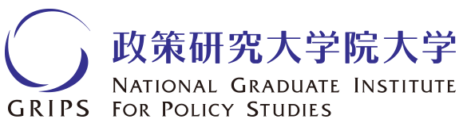
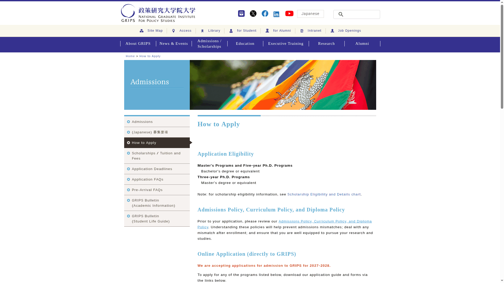
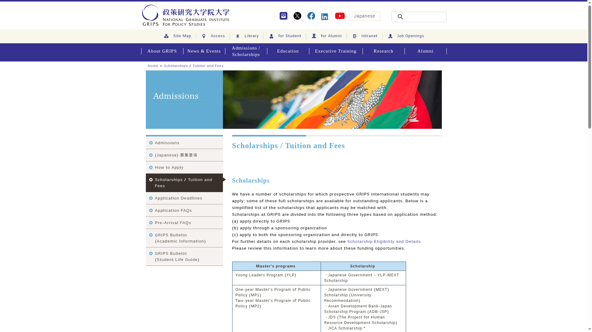

GRIPS Tokyo: Master's and PhD with MEXT, ADB and World Bank scholarships, apply by 20 November
GRIPS, the National Graduate Institute for Policy Studies in Tokyo, has opened 2027-28 admission to its English-taught Master's and PhD programmes in public policy, macroeconomic policy, public finance and science and technology policy. Online registration for most programmes closes on 20 November 2026 at 5:00 PM JST (1:30 PM IST), and the Public Finance programme stays open until 12 February 2027. Programme-specific scholarships can cover fees, a stipend and return flights. Funding is competitive, and JJ/WBGSP availability for 2027 is not yet announced. Selection is by document screening, so there is no need to travel to Japan to apply.
At a glance
- What: 2027-28 admission to GRIPS, Tokyo - English-taught Master's and PhD programmes in policy fields, with full scholarships for strong applicants
- Who runs it: National Graduate Institute for Policy Studies (GRIPS), a Japanese national university in Roppongi, Tokyo
- Deadlines (outside Japan): online registration by 20 November 2026, 5:00 PM JST (1:30 PM IST) for most programmes; Public Finance programme by 12 February 2027; supporting documents must reach Tokyo by post one week later
- Cost if self-financed: application fee 30,000 yen, admission fee 282,000 yen, tuition 642,960 yen a year in two installments
- Scholarships: MEXT, ADB-JSP, JDS and JICA for the public policy programmes; JISPA for Macroeconomic Policy; JJ/WBGSP for Public Finance (Tax); Japan-WCO for Public Finance (Customs). All cover fees; most pay a monthly stipend and return flights
- Where: grips.ac.jp/en/admissions/apply
Programmes and their scholarships
From the official Scholarships / Tuition and Fees page:
- One-year and Two-year Master's Program of Public Policy (MP1, MP2): Japanese Government (MEXT) Scholarship (University Recommendation), Asian Development Bank-Japan Scholarship Program (ADB-JSP), JDS and JICA Scholarship
- Macroeconomic Policy Program (MEP): Japan-IMF Scholarship Program for Asia (JISPA), applied through the sponsoring organization
- Public Finance Program (Tax): Joint Japan/World Bank Graduate Scholarship Program (JJ/WBGSP) and JICA Scholarship
- Public Finance Program (Customs): Japan-WCO Human Resource Development Programme
- Five-year PhD (GRIPS Global Governance Program G-cube, Policy Analysis Program PA): MEXT (University Recommendation) and JICA Scholarship
- Three-year PhD (Science, Technology and Innovation Policy Program STI): JICA Scholarship. MEXT is not offered for STI in the 2027 intake under the newer 29 September notice
- PhD in Disaster Management (DM): ICHARM Research Assistantship and JICA Scholarship, paper application by 5 March 2027
Deadlines by funding (2027-28, applicants outside Japan)
From GRIPS's official Application Deadlines by Funding document:
- MEXT (University Recommendation) for MP1, MP2, G-cube, PA: online form by 20 November 2026, 5:00 PM JST; documents by 27 November 2026
- ADB-JSP for MP1, MP2: online form by 20 November 2026; documents by 27 November 2026
- JJ/WBGSP for PF (Tax): online form by 12 February 2027; documents by 19 February 2027
- Japan-WCO for PF (Customs): online form by 12 February 2027; documents by 19 February 2027
- JICA Scholarship: for candidates instructed by JICA, online form by 30 April 2027; start with the department in your organization responsible for overseas study, not the JICA office
- Self-financed or externally funded: MP1, MP2, MEP by 20 November 2026; PF by 12 February 2027; MSP by 30 April 2027; DM (paper-based) by 5 March 2027
What the scholarships pay
- MEXT (University Recommendation): monthly stipend of 147,000 yen for master's study (148,000 yen for doctoral), plus application fee, admission fee and tuition, and economy-class flights to Japan on enrollment and back home on completion. Applicants must be under 35 as of 1 April 2027.
- ADB-JSP: monthly stipend of 147,000 yen, all fees, return flights, plus establishment, research, book and travel allowances. Applicants must be under 36 as of 1 April 2027, from an ADB developing member country (India is one), with at least two years of full-time work experience and no prior master's degree.
- JJ/WBGSP (PF Tax): monthly stipend of 306,910 yen, all fees, return flights and travel allowances, for government tax officials from eligible developing countries with at least three years of relevant work. GRIPS notes that this scholarship's availability for the 2027 academic year has not been announced yet and will be posted on the programme page.
- Stipend and allowance amounts are as published by GRIPS in August 2026 and can change.
Who can apply
- Master's programmes and five-year PhD programmes: a bachelor's degree or equivalent.
- Three-year PhD programmes: a master's degree or equivalent.
- GRIPS itself sets no age limit, but each scholarship agency's conditions apply, such as the MEXT and ADB-JSP age caps above.
- All listed programmes are taught in English. Selection for admission is based on an evaluation of the information and supporting documents you submit, so the whole application is done from India without travelling to Japan.
How to apply
Checked on the GRIPS How to Apply page and Application Guide on 15 November 2026:
- Open grips.ac.jp/en/admissions/apply and download the Application Guide (Step 0) first; it carries the forms, document list and rules you will need.
- Download and complete the designated forms (Step 1): Application for Admission, Statement of Purpose, Letter of Recommendation, Certificate of Employment, a Research Proposal for two-year master's and PhD applicants, and the WCO Nomination Form for the PF Customs course. Make PDF files of them for upload.
- Fill and submit the Online Registration Form at webentry.grips.ac.jp/entry_form (Step 2). You may submit it only once in an academic year, and it must match your Application for Admission. To be considered for a GRIPS-allocated scholarship, select the appropriate funding option in the form; no separate scholarship application is needed.
- Post a complete hard-copy set of your supporting documents to the Admissions Office, GRIPS, 7-22-1 Roppongi, Minato-ku, Tokyo 106-8677, Japan, to reach by the document deadline, one week after the online deadline (Step 3). GRIPS strongly recommends registered mail or courier well ahead of the deadline. Your official TOEFL or IELTS score report must be sent directly by the test centre (GRIPS institution code for TOEFL is 9040).
- Scholarship allocation is competitive and limited; GRIPS decides the specific scholarship based on the providers' eligibility rules.


Keep these limits in mind
- For the 2027 intake, MEXT scholarships at GRIPS are available only to master's applicants in MP1 and MP2 and to doctoral applicants in G-cube and PA; MEXT plans to discontinue its general-category calls, per a GRIPS notice dated 29 September 2026.
- JJ/WBGSP availability for the 2027 academic year is not yet announced; watch the PF programme page if you are counting on it.
- Supporting documents must physically reach Tokyo by post within a week of the online deadline, so Indian applicants should courier them early.
- Some programmes (YLP, MEP, AIP, DMP, MSP) are applied through the sponsoring organization, not directly to GRIPS, and JICA candidates must be instructed by JICA first.
- Tuition and fees are subject to change, and transaction or handling charges are on the applicant.
- We read the official admissions pages and guides; we did not register, log in or submit an application, and nothing was paid.
- We looked for a reliable English or Malayalam YouTube walkthrough of the GRIPS application but could not verify one; follow the official Application Guide linked above.
Frequently asked questions
What is the last date to apply? 20 November 2026, 5:00 PM JST (1:30 PM IST) for the public policy, macroeconomic policy and PhD programmes under MEXT, ADB-JSP and self-financing; 12 February 2027 for the Public Finance programme (Tax and Customs). Supporting documents must reach Tokyo by post one week later.
Is it fully funded? The listed scholarships cover the application fee, admission fee and tuition, and MEXT, ADB-JSP and JJ/WBGSP also pay a monthly stipend and return flights. What each scholarship pays differs, so check the official Scholarship Eligibility and Details chart.
Do I need to know Japanese? The programmes listed here are taught in English. A TOEFL or IELTS score report is required and must reach GRIPS directly from the test centre.
Can I apply to more than one programme? You may submit the Online Registration Form only once in an academic year, so choose your programme and funding option carefully.
Whom do I contact for help? GRIPS Admissions Office at admissions@grips.ac.jp, or +81-3-6439-6046.
Source: the official GRIPS How to Apply, Scholarships / Tuition and Fees and Application Deadlines pages, the Application Guide 2027-2028, Application Deadlines by Program, Application Deadlines by Funding and Scholarship Eligibility and Details. Checked on the live pages on 15 November 2026. This is an AiCoN explainer, not a GRIPS publication.